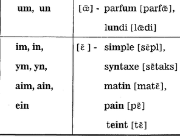

Правила чтения
Фонетическая система французского языка включает 15 гласных, 17 согласных и 3 полугласных, всего 35 фонем. В русском языке имеется 5 гласных, 1 полугласный и 36 согласных звуков, всего 42 фонемы. Несмотря на то, что в количественном отношении (35 фонем и 42 фонемы) разница между французским и русским языками небольшая, в фонетической системе этих двух языков имеются большие различия. В русском языке преобладают согласные звуки, во французском – гласные.
Фонетика французского языка может представлять затруднение для людей, начинающих изучать французский: к примеру, одна французская буква (см. французский алфавит) может иметь 2-3 варианта произношения или 3-4 буквы подряд могут произноситься как один звук! К счастью, правила чтения во французском языке довольно строгие.
